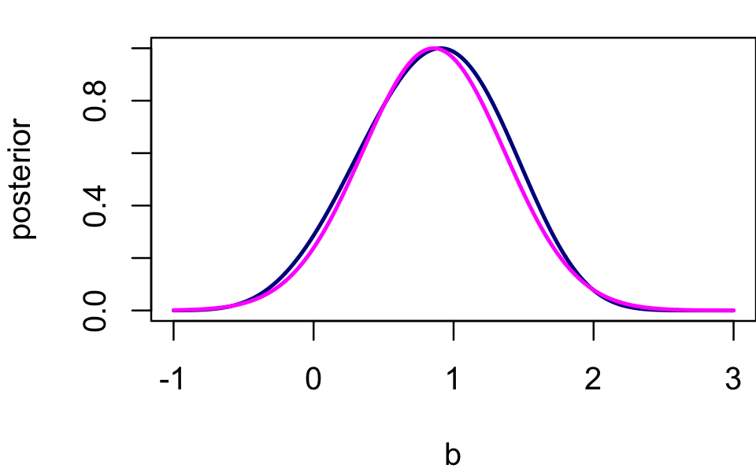

Last updated: 2020-10-19
Checks: 7 0
Knit directory: vgapois/analysis/
This reproducible R Markdown analysis was created with workflowr (version 1.6.2.9000). The Checks tab describes the reproducibility checks that were applied when the results were created. The Past versions tab lists the development history.
Great! Since the R Markdown file has been committed to the Git repository, you know the exact version of the code that produced these results.
Great job! The global environment was empty. Objects defined in the global environment can affect the analysis in your R Markdown file in unknown ways. For reproduciblity it’s best to always run the code in an empty environment.
The command set.seed(1) was run prior to running the code in the R Markdown file. Setting a seed ensures that any results that rely on randomness, e.g. subsampling or permutations, are reproducible.
Great job! Recording the operating system, R version, and package versions is critical for reproducibility.
Nice! There were no cached chunks for this analysis, so you can be confident that you successfully produced the results during this run.
Great job! Using relative paths to the files within your workflowr project makes it easier to run your code on other machines.
Great! You are using Git for version control. Tracking code development and connecting the code version to the results is critical for reproducibility.
The results in this page were generated with repository version 3cf531b. See the Past versions tab to see a history of the changes made to the R Markdown and HTML files.
Note that you need to be careful to ensure that all relevant files for the analysis have been committed to Git prior to generating the results (you can use wflow_publish or wflow_git_commit). workflowr only checks the R Markdown file, but you know if there are other scripts or data files that it depends on. Below is the status of the Git repository when the results were generated:
Unstaged changes:
Modified: analysis/vgapois_demo_2d.R
Note that any generated files, e.g. HTML, png, CSS, etc., are not included in this status report because it is ok for generated content to have uncommitted changes.
These are the previous versions of the repository in which changes were made to the R Markdown (analysis/vgapois_demo_1d.Rmd) and HTML (docs/vgapois_demo_1d.html) files. If you’ve configured a remote Git repository (see ?wflow_git_remote), click on the hyperlinks in the table below to view the files as they were in that past version.
| File | Version | Author | Date | Message |
|---|---|---|---|---|
| Rmd | 3cf531b | Peter Carbonetto | 2020-10-19 | workflowr::wflow_publish(“vgapois_demo_1d.Rmd”) |
| Rmd | 1e65ca8 | Peter Carbonetto | 2020-10-14 | Working on implementation of vgapois and accompanying demo, vgapois_demo_2d.R. |
| html | 0ce1a87 | Peter Carbonetto | 2020-10-14 | Fixed expressions in vgapois_demo_1d example. |
| Rmd | 6d5bfa0 | Peter Carbonetto | 2020-10-14 | workflowr::wflow_publish(“vgapois_demo_1d.Rmd”) |
| html | 7c3e707 | Peter Carbonetto | 2020-10-14 | Re-built vgapois_demo_1d page after changes to vgapois1. |
| Rmd | 98fa021 | Peter Carbonetto | 2020-10-14 | Generalized vgapois1 slightly to allow for sample-dependent intercept; revised demo accordingly. |
| html | c2a8990 | Peter Carbonetto | 2020-10-09 | Fixed link in vgapois_demo_1d. |
| Rmd | 5e8c1e1 | Peter Carbonetto | 2020-10-09 | workflowr::wflow_publish(“vgapois_demo_1d.Rmd”) |
| html | cf7ea69 | Peter Carbonetto | 2020-10-09 | Made a few small improvements to the vgapois_demo_1d example. |
| Rmd | 40a9388 | Peter Carbonetto | 2020-10-09 | workflowr::wflow_publish(“vgapois_demo_1d.Rmd”) |
| Rmd | bdce49c | Peter Carbonetto | 2020-10-09 | Added a few comments in vgapois.R. |
| html | 197bfe0 | Peter Carbonetto | 2020-10-09 | Re-built vgapois_demo_1d analysis after some improvements. |
| Rmd | 7fb8a9e | Peter Carbonetto | 2020-10-09 | Added more text to vgapois_demo_1d analysis. |
| html | 7fb8a9e | Peter Carbonetto | 2020-10-09 | Added more text to vgapois_demo_1d analysis. |
| html | c02efb3 | Peter Carbonetto | 2020-10-09 | Fixed plot in vgapois_demo_1d analysis. |
| Rmd | 29b7f6b | Peter Carbonetto | 2020-10-09 | workflowr::wflow_publish(“vgapois_demo_1d.Rmd”) |
| html | 03de25f | Peter Carbonetto | 2020-10-09 | Added text to vgapois_demo_1d analysis. |
| Rmd | f0c1c6c | Peter Carbonetto | 2020-10-09 | workflowr::wflow_publish(“vgapois_demo_1d.Rmd”) |
| html | 87f7785 | Peter Carbonetto | 2020-10-09 | Created vgapois_demo_1d page. |
| Rmd | d999aa5 | Peter Carbonetto | 2020-10-09 | workflowr::wflow_publish(“vgapois_demo_1d.Rmd”) |
| Rmd | c5d5206 | Peter Carbonetto | 2020-10-09 | Added workflowr files. |
Here we demonstrate the variational Gaussian approximation for the Poisson-normal in the simplest case when there is one unknown. Under the data model, the counts \(y_1, \ldots, y_n\) are Poisson with log-rates \(\lambda_1, \ldots, \lambda_n\), in which \(\lambda_i = a_i + x_i b\). The unknown \(b\) is assigned a normal prior with zero mean and standard deviation \(\sigma_0\). Here we use variational methods to approximate the posterior of \(b\) with a normal density \(N(b; \mu, s^2)\). See the Overleaf document for a more detailed description of the model and variational approximation.
Load the functions implementing the variational inference algorithms and set the seed.
source("../code/vgapois.R")
set.seed(1)Simulate counts from the following Poisson model: \(y_i \sim \mathrm{Poisson}(e^{\lambda_i})\), in which \(\lambda_i = a_i + b x_i\).
n <- 10
b <- 1
a <- rnorm(n,mean = -2)
x <- rnorm(n)
r <- a + x*b
y <- rpois(n,exp(r))Here we compute an importance sampling estimate of the marginal log-likelihood We will compare this against the lower bound to the marginal likelihood obtained by the variational approximation.
s0 <- 3
ns <- 1e5
b <- rnorm(ns,sd = sqrt(s0))
logw <- rep(0,ns)
for (i in 1:ns)
logw[i] <- compute_loglik_pois1(x,y,a,b[i])
d <- max(logw)
logZ <- log(mean(exp(logw - d))) + dCompute importance sampling estimates of the mean and variance.
w <- exp(logw - d)
w <- w/sum(w)
mu.mc <- sum(w*b)
s.mc <- sum(w*b^2) - mu.mc^2Fit the variational Gaussian approximation by optimizing the variational lower bound (the “ELBO”).
fit <- vgapois1(x,y,a,s0)
mu <- fit$par["mu"]
s <- fit$par["s"]
cat(fit$message,"\n")
cat(sprintf("Monte Carlo estimate: %0.12f\n",logZ))
cat(sprintf("Variational lower bound: %0.12f\n",-fit$value))
# CONVERGENCE: REL_REDUCTION_OF_F <= FACTR*EPSMCH
# Monte Carlo estimate: -6.020537793023
# Variational lower bound: -6.027544173384Here we see that the ELBO slightly undershoots the marginal likelihood.
Compare the importance sampling and variational estimates of the mean and standard deviation.
cat(sprintf("Monte Carlo estimates: mean=%0.4f, sd=%0.4f\n",mu.mc,sqrt(s.mc)))
cat(sprintf("Variational estimates: mean=%0.4f, sd=%0.4f\n",mu,sqrt(s)))
# Monte Carlo estimates: mean=0.8570, sd=0.5124
# Variational estimates: mean=0.8573, sd=0.5063Plot the exact posterior density (dark blue), and compare it against the variational Gaussian approximation (magenta).
ns <- 1000
b <- seq(-1,3,length.out = ns)
logp <- rep(0,ns)
for (i in 1:ns)
logp[i] <- compute_logp_pois1(x,y,a,b[i],s0)
par(mar = c(4,4,1,0))
plot(b,exp(logp - max(logp)),type = "l",lwd = 2,col = "darkblue",
xlab = "b",ylab = "posterior")
pv <- dnorm(b,mu,sqrt(s))
lines(b,pv/max(pv),col = "magenta",lwd = 2)
The true posterior is very much “bell shaped”, so as expected the normal approximation is a good fit to the true posterior.
sessionInfo()
# R version 3.6.2 (2019-12-12)
# Platform: x86_64-apple-darwin15.6.0 (64-bit)
# Running under: macOS Catalina 10.15.6
#
# Matrix products: default
# BLAS: /Library/Frameworks/R.framework/Versions/3.6/Resources/lib/libRblas.0.dylib
# LAPACK: /Library/Frameworks/R.framework/Versions/3.6/Resources/lib/libRlapack.dylib
#
# locale:
# [1] en_US.UTF-8/en_US.UTF-8/en_US.UTF-8/C/en_US.UTF-8/en_US.UTF-8
#
# attached base packages:
# [1] stats graphics grDevices utils datasets methods base
#
# loaded via a namespace (and not attached):
# [1] workflowr_1.6.2.9000 Rcpp_1.0.5 rprojroot_1.3-2
# [4] digest_0.6.23 later_1.0.0 R6_2.4.1
# [7] backports_1.1.5 git2r_0.26.1 magrittr_1.5
# [10] evaluate_0.14 stringi_1.4.3 rlang_0.4.5
# [13] fs_1.3.1 promises_1.1.0 whisker_0.4
# [16] rmarkdown_2.3 tools_3.6.2 stringr_1.4.0
# [19] glue_1.3.1 httpuv_1.5.2 xfun_0.11
# [22] yaml_2.2.0 compiler_3.6.2 htmltools_0.4.0
# [25] knitr_1.26